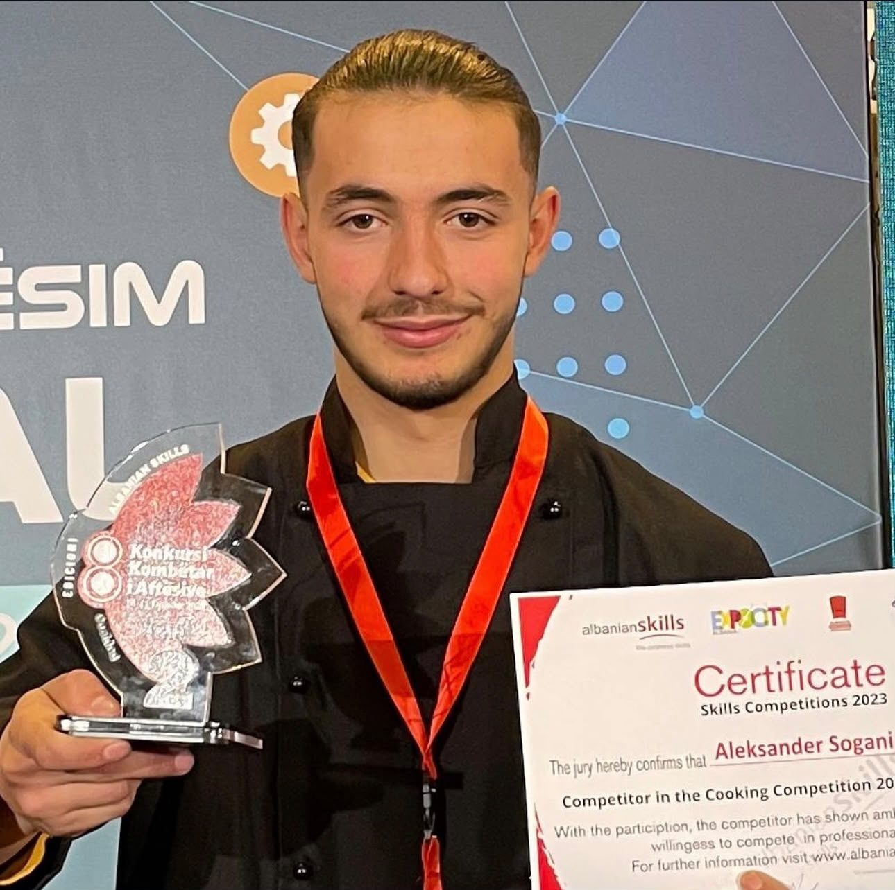
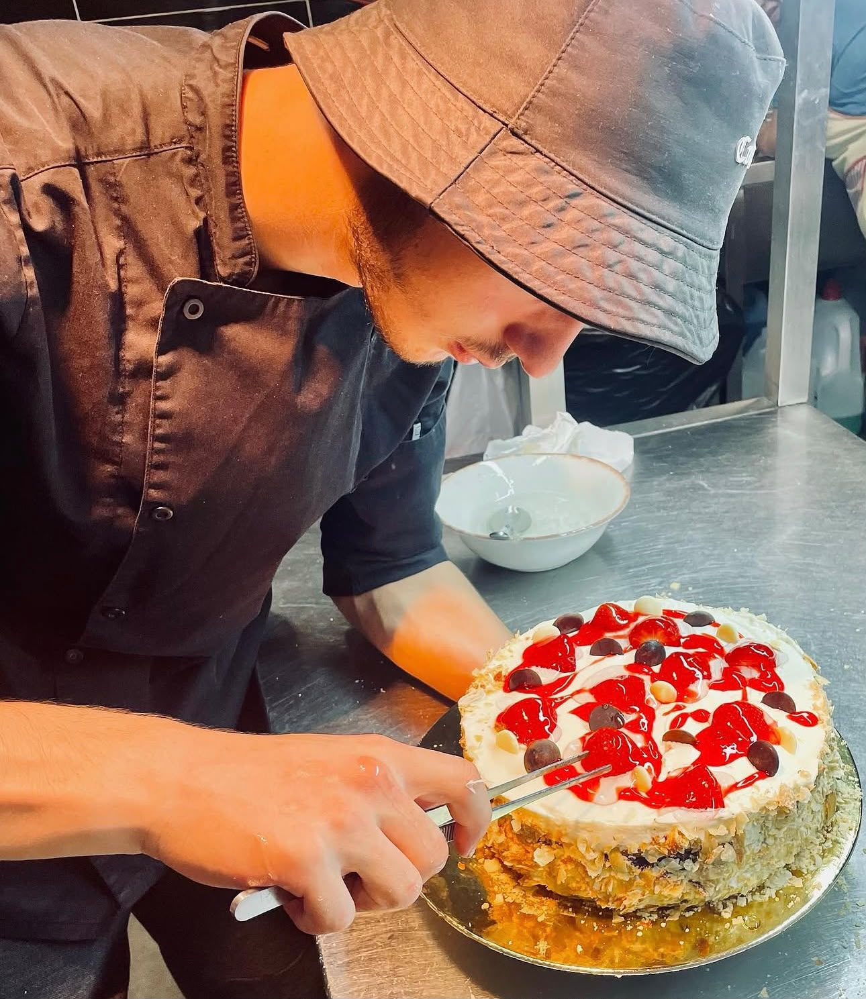
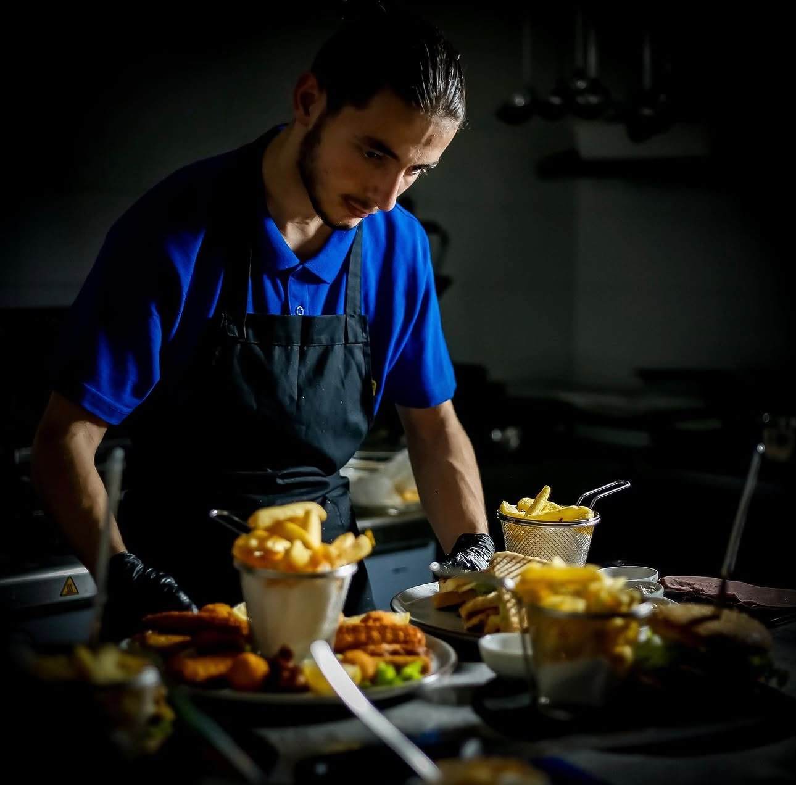
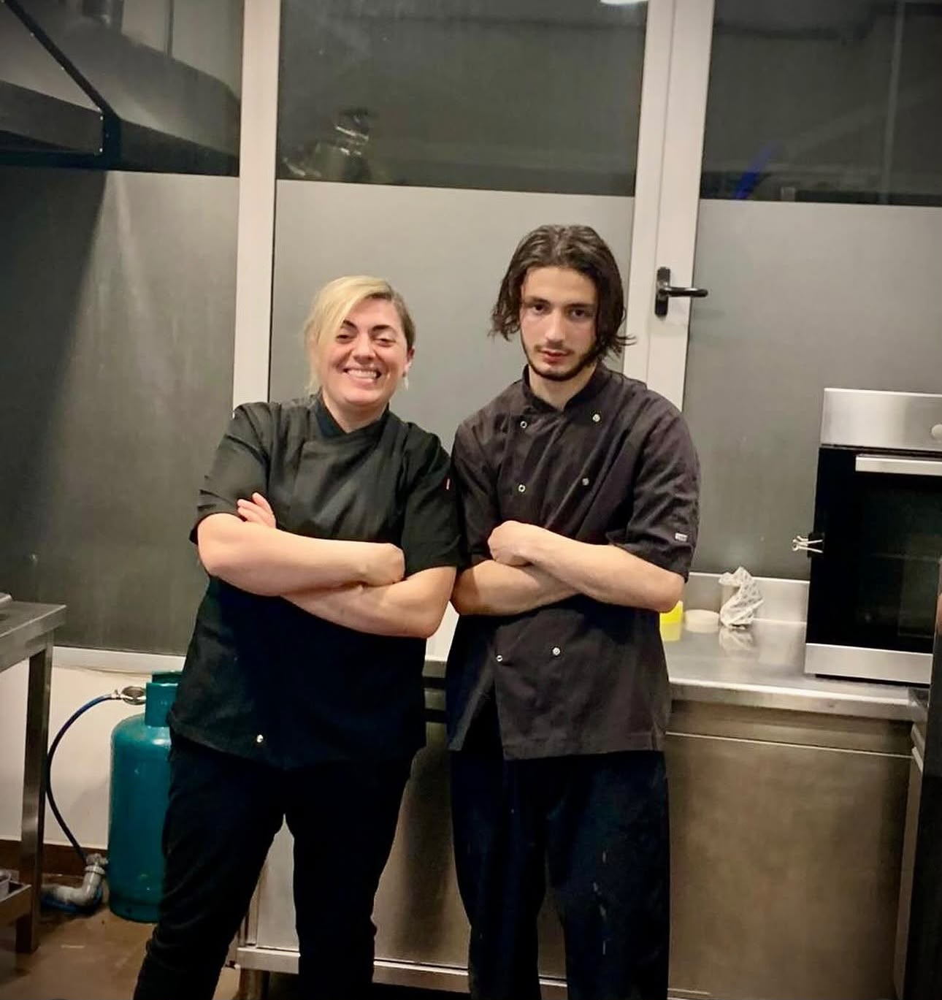
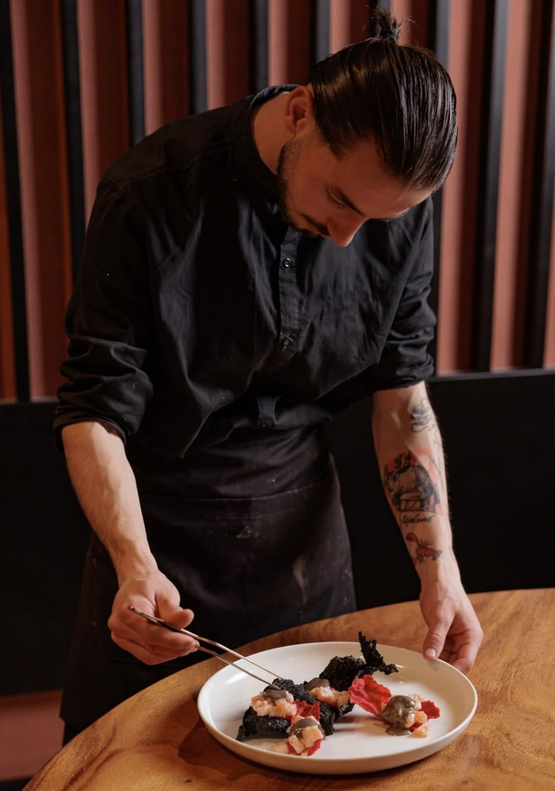
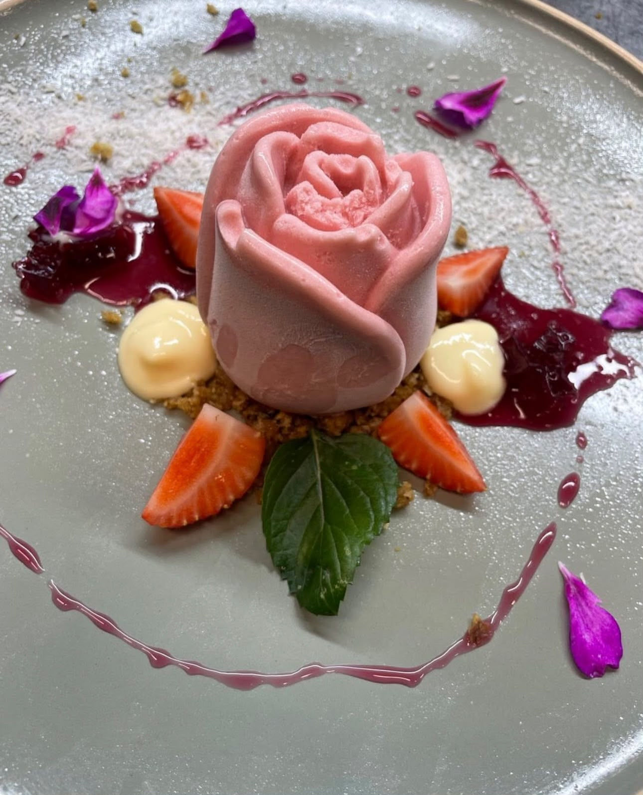
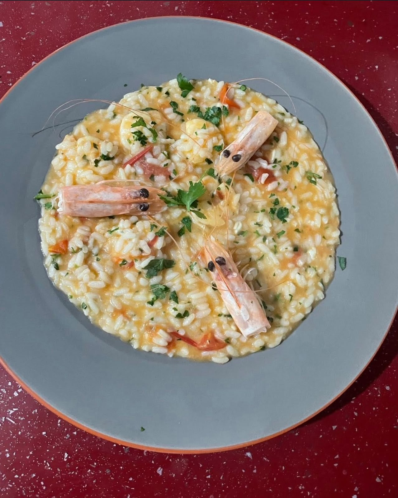
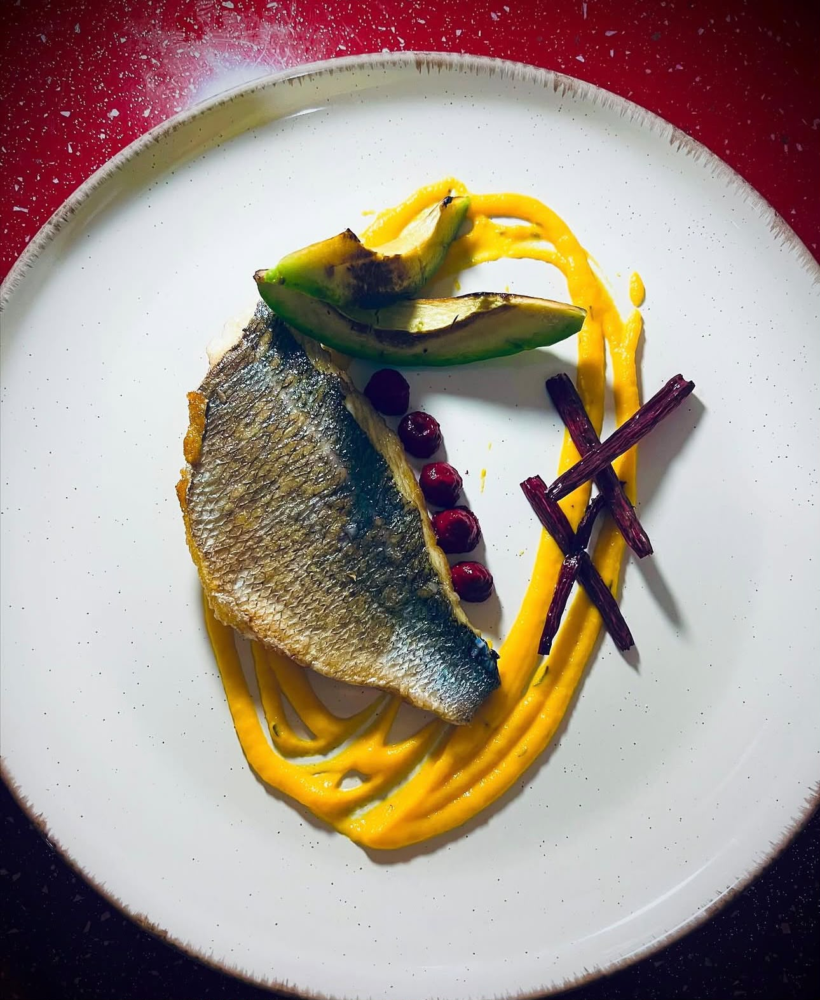
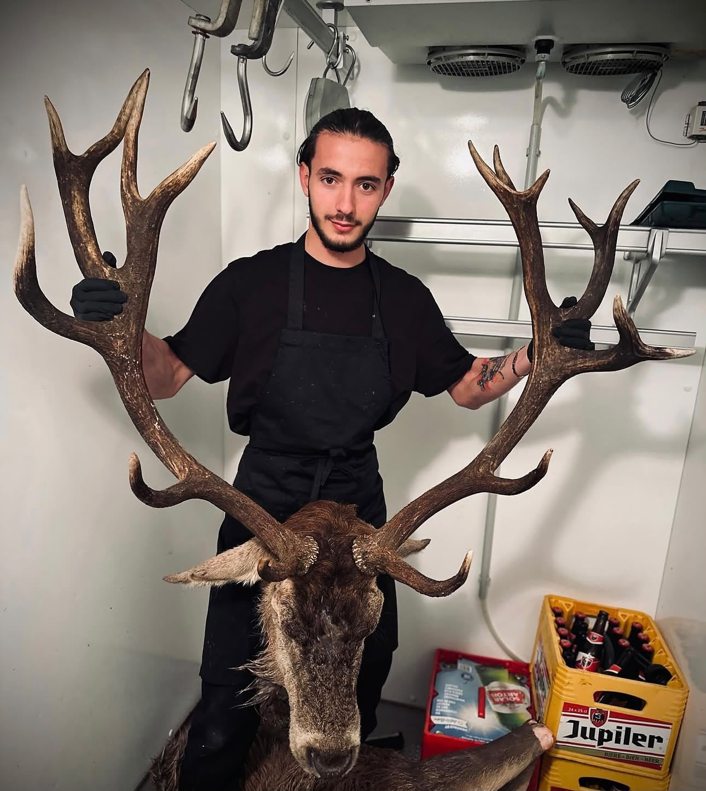
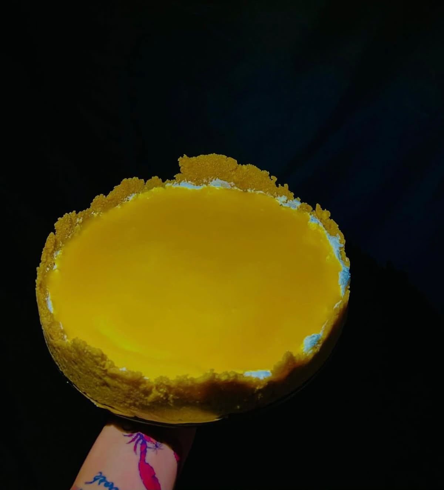

Eksperiencë kulinarike private dhe gatime me porosi për ngjarjet tuaja speciale.
Rezervoni një natë të paharrueshme shije në shtëpinë tuaj.
Zbuloni si lindi pasioni për kuzhinën dhe hapat e karrierës sime.
Gjithçka nisi në kuzhinën e vogël familjare, ku eksperimentoja me përbërësit lokalë dhe recetat tradicionale. Pasioni për shijen mua më shtyu të ndiqja arsimimin profesional kulinar.

Pasi përfundova studimet, punova si Sous Chef dhe më vonë Head Chef në restorante të njohura. Aty mësova disiplinën, teknikën e lartë të prezantimit (plating) dhe menaxhimin e shijeve komplekse.


Sot ofroj shërbime ekskluzive si Private Chef për darka intime, ngjarje familjare dhe evente luksoze, duke sjellë përvojën e një restoranti me 5 yje direkt në shtëpinë tuaj.


Kliko mbi foton e çdo pjate për ta zmadhuar dhe për të lexuar përshkrimin e plotë të saj.

Risotto Porcini
Salmon Agrumesh
Fileto Sous-Vide
Tiramisu PistaqioKrem i ngrohtë orizi Carnaroli i gatuar me lëng shtëpiak perimesh, kërpudha malore të freskëta, gjalpë zviceran dhe vaj trufeje të zezë.
Fileto e mekur salmoni me lëkurë krokante, e shoqëruar me puree bizelesh me nenexhik dhe salcë delikate limoni e portokalli të egër.
Mish i përzgjedhur viçi i gatuar me teknikën sous-vide për 2 orë, i shërbyer me patate me gjalpë dhe reduktim vere të kuqe me sherebelë.
Varianti modern i desertit klasik italian me krem mascarpone të rrahur dhe pistakë të bluar nga Siçilia.
Përvojat e drejtpërdrejtë të klientëve tanë nga darkat private dhe eventet e veçanta.
Lidhu me Shefin
Ndiqni rrugëtimin tim në rrjetet sociale ose më kontaktoni drejtpërdrejt për rezervime.
Shefi Juaj Privat
"Pasion, Elegancë dhe Shije në çdo pjatë."